Kanazawa
Зачем и сколько
Сколько дней и почему: В1 и В3: 1 ночь - вечер после Shirakawa-go и утро перед Kyoto. В2: 2 ночи - целый понедельник в городе. Учти: рынок Omicho по средам частично закрыт, музей XXI века закрыт по понедельникам.
Как добраться: из Shirakawa-go 13:20 → 15:09 (1 ч 49 мин); в Kyoto 11:05 → 13:09 (2 ч 04 мин, пересадка в Tsuruga).
Погода в твои дни (Open-Meteo, 14.10 10:27): Kanazawa: +24/+10, ☀️ сухо; Kanazawa: +25/+19, 🌧 дождь 6 мм; Kanazawa: +22/+17, ☀️ сухо; Kanazawa: +20/+16, 🌧 дождь 26 мм

.jpg){kind=link}

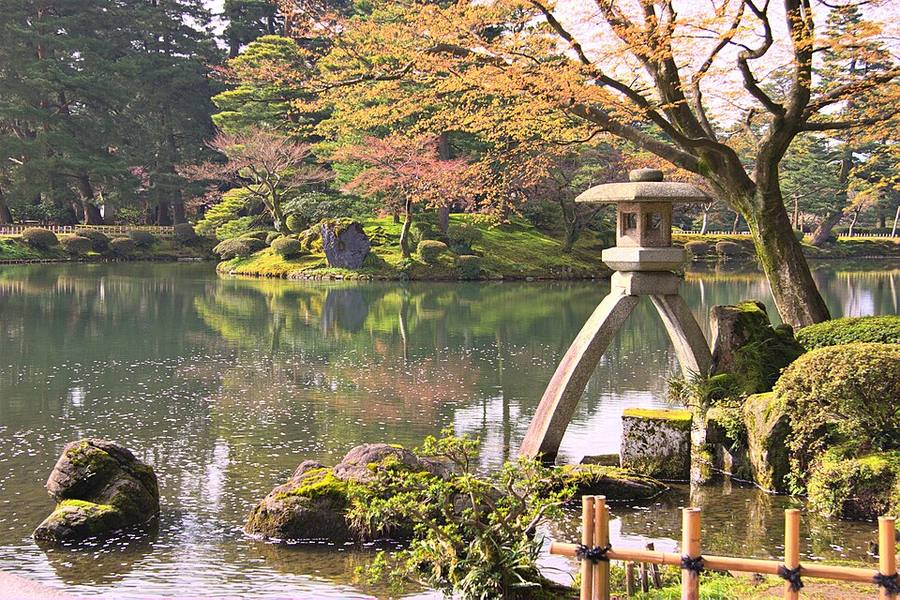
_in_Kenrokuen_garden,_Kanazawa,_Japan_(2621640037).jpg){kind=link}


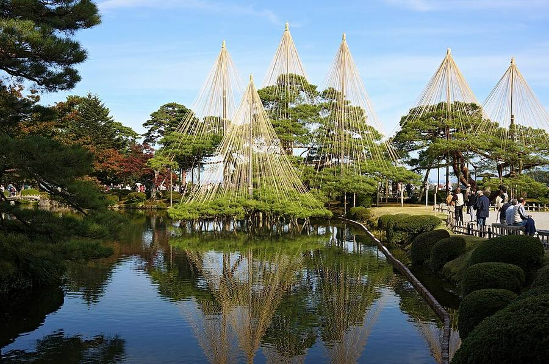


.jpg){kind=link}

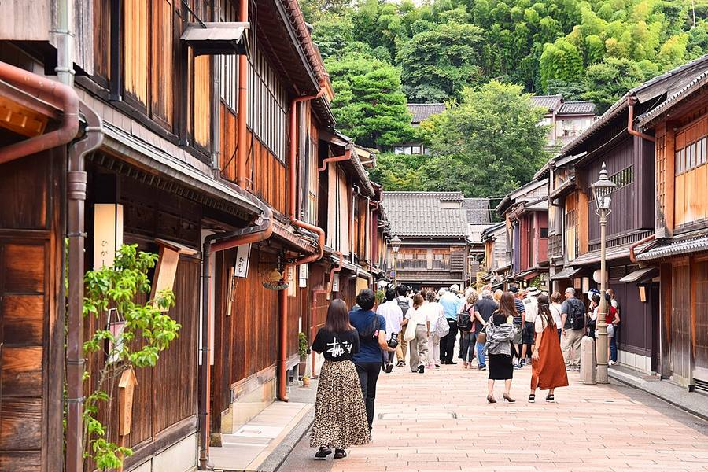
.jpg){kind=link}

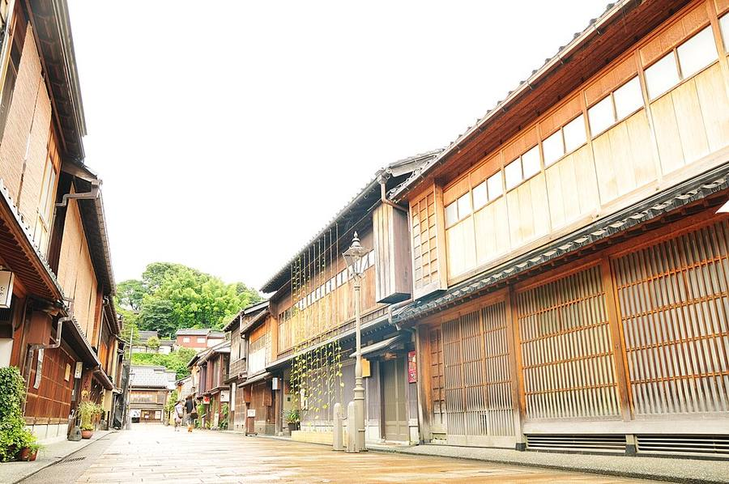


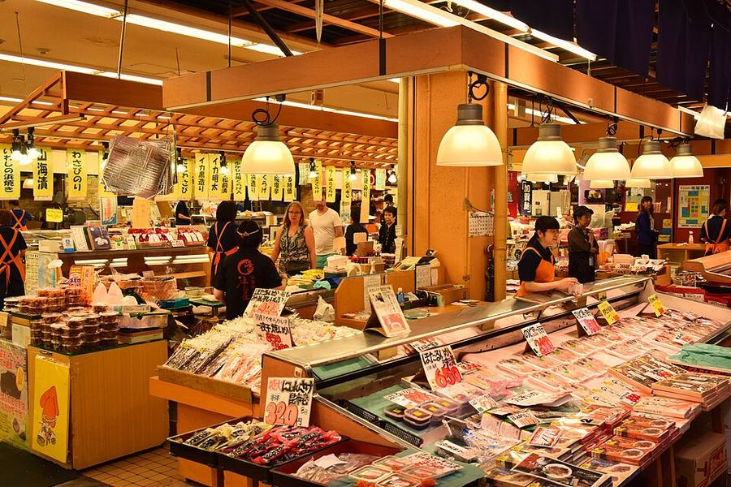
.jpg){kind=link}

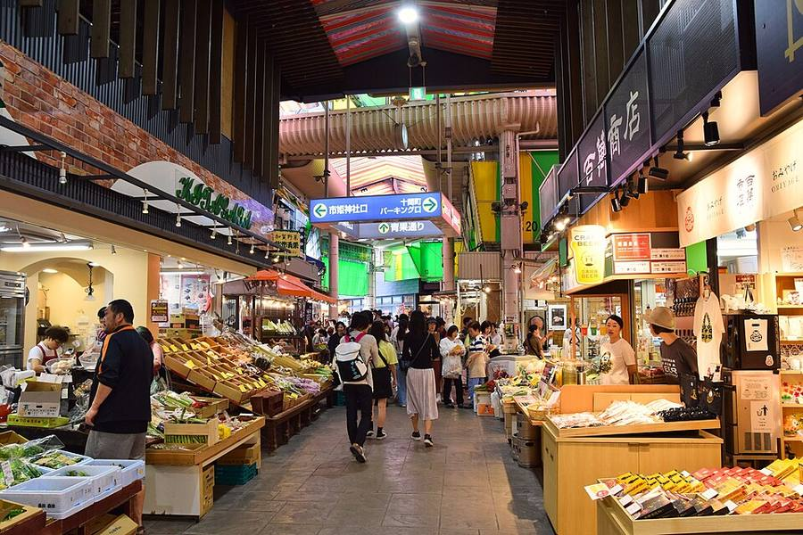
.jpg){kind=link}

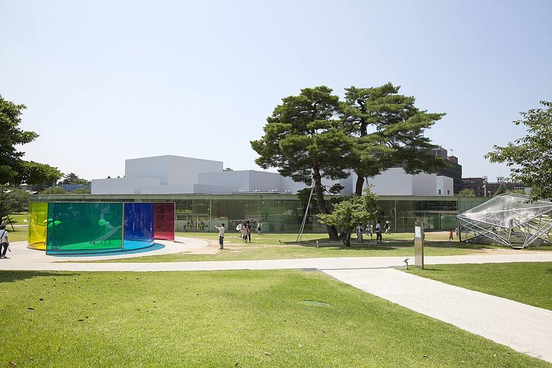


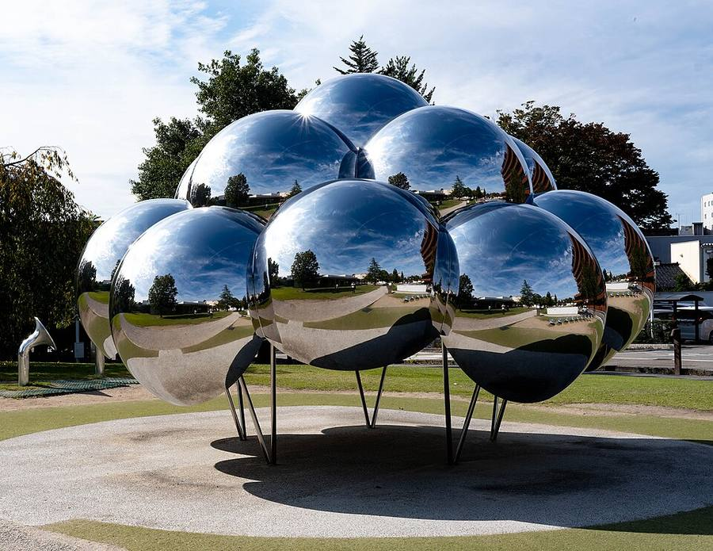


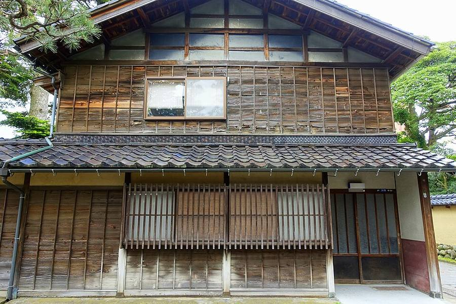


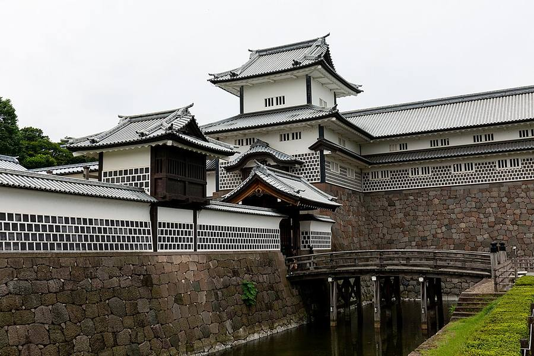


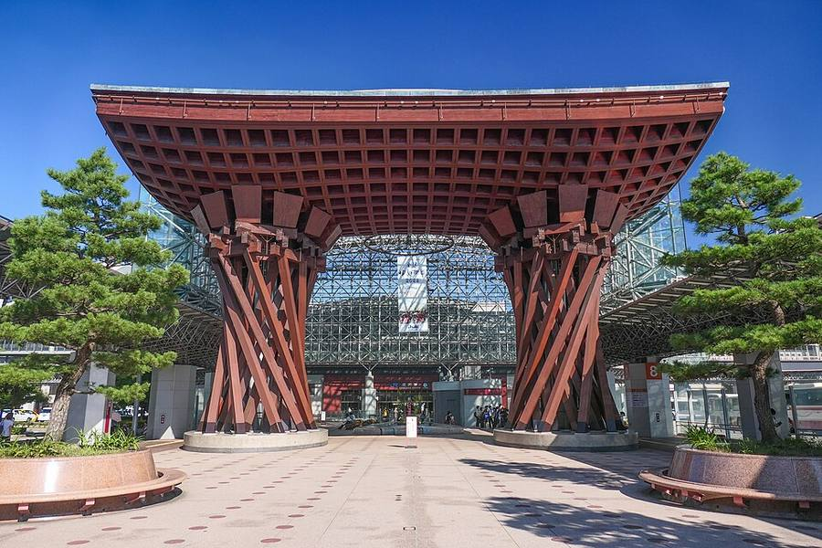

Что посмотреть
Сад Kenroku-en
Один из трёх лучших садов Японии. Символ - каменный фонарь Kotoji на двух ногах у пруда. С 16.10 открыт 8:00-17:00, билет 320 ¥.
Квартал гейш Higashi Chaya
Улицы деревянных чайных домов. Улица открыта всегда, чайные по своим часам: Shima 9:00-18:00 (500 ¥), Kaikaro 9:00-17:00 (750 ¥).
Рынок Omicho
Главный рынок морепродуктов, лучше обедать здесь. Примерно 9:00-17:00, у каждой лавки свои часы. По воскресеньям, средам и праздникам многие закрыты.
Музей современного искусства XXI века
Круглое стеклянное здание. Выставки 10:00-18:00 (пт-сб до 20:00), закрыт по понедельникам. Бесплатная зона открыта каждый день 9:00-22:00.
Замок Kanazawa и ворота Tsuzumi-mon у вокзала
Парк замка рядом с Kenroku-en. Деревянные ворота у вокзала - первое, что видишь по приезде.
Как уехать в Kyoto
Hokuriku Shinkansen до Tsuruga + экспресс Thunderbird, около 2 часов.
Видео
 Kanazawa Guide: 2-Day Trip to a Traditional Japanese City
Kanazawa Guide: 2-Day Trip to a Traditional Japanese CityTokyo Cheapo · 12 мин
 Kanazawa’s Higashi Chaya Morning View Walk
Kanazawa’s Higashi Chaya Morning View WalkONLY in JAPAN * GO · 54 мин